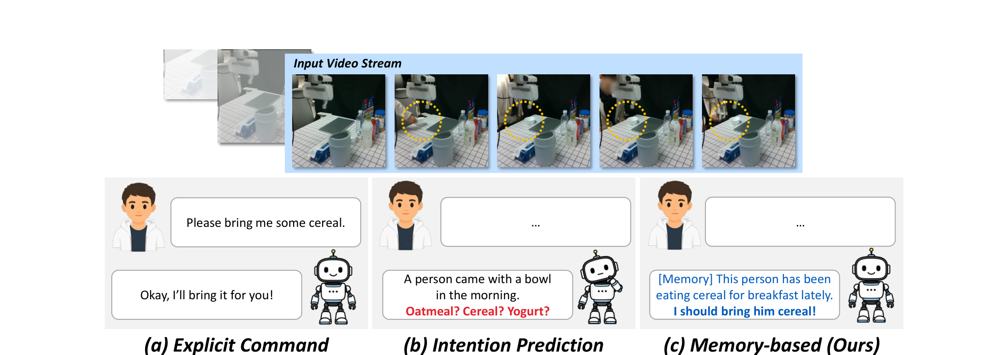
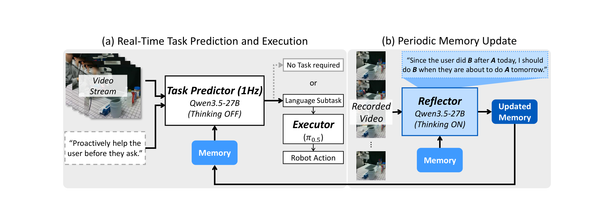
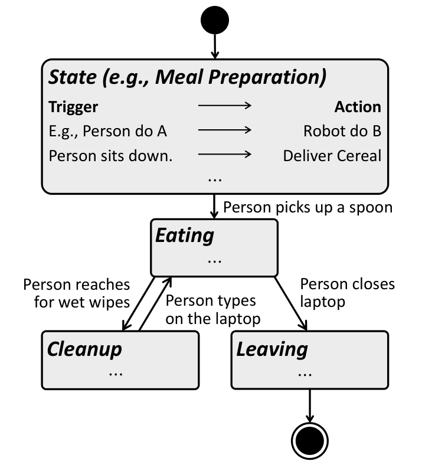
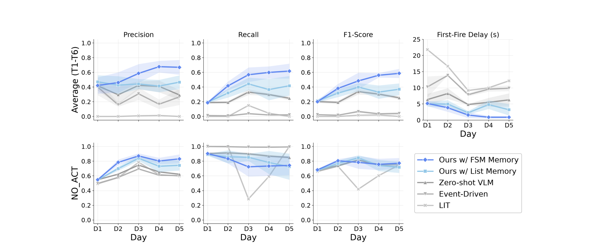
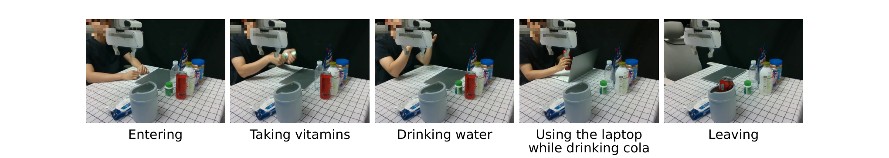
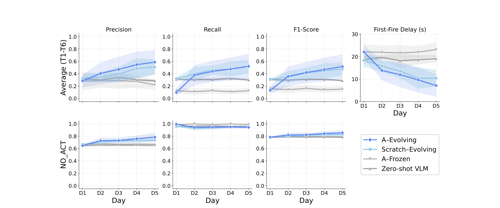
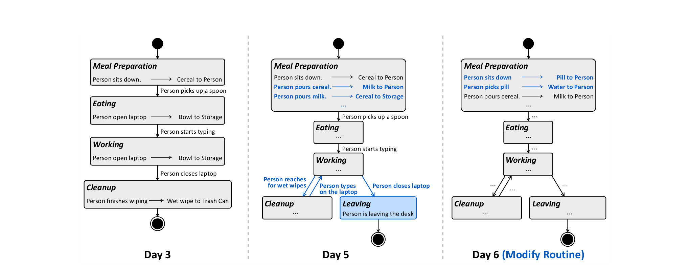

Proactive robots should anticipate user needs and provide assistance before being explicitly asked. A straightforward approach is to infer human intentions from commonsense knowledge, but the same observed behavior can imply different needs across users, potentially leading to unwanted assistance. We observe that everyday routines in the real world exhibit recurring patterns, so learning these patterns can reduce ambiguity in proactive decisions. Based on this, we propose a memory-based agentic framework in which a VLM task predictor reads a Procedural Assistance Memory (PAM) alongside the current observation to decide when to assist and what task to perform, and a VLA executor performs the predicted task. PAM is structured as a finite-state machine over activity phases, per-state assistance rules, and event-driven transitions; a reflection VLM revises PAM from each day's interaction trace without weight updates or retraining. In our 5-day desk-assistance evaluation, memory-free baselines remain conservative, with limited recall on proactive tasks. Our system improves consistently with accumulated experience, achieving the highest precision, recall, and F1 and reducing first-fire delay from approximately 5 seconds on Day 1 to 1 second by Day 5. Our approach also adapts to changes in the user's routine through continued memory reflection, recovering from memory–routine misalignment after a single memory update.

Visually similar observations map to different correct actions depending on user-specific habits, and our PAM memory resolves this ambiguity by conditioning the task predictor on accumulated behavioral context.
A truly useful assistant in everyday life does not only respond to requests, but also anticipates when help would be valuable. Zero-shot prediction remains unreliable when the same observable behavior corresponds to different desired outcomes across users: one person setting out a mug wants coffee, another wants hot water for tea. A fixed, pretrained predictor cannot resolve such ambiguity, because the missing information is not in the scene but in the individual user's habits. Crucially, this missing information can be learned during deployment. To this end, we introduce Procedural Assistance Memory (PAM), a continually updated deployment-time memory that records when assistance is needed and what assistive task should be issued for a particular user.

(a) A VLM task predictor reads PAM and recent frames to select assistive tasks for the VLA executor. (b) At the end of each day, a VLM memory reflector updates PAM from the day's video by adding or revising states, trigger-action pairs, and transitions.
Our task predictor serves as System 2, selecting assistive tasks without task-specific user instructions. At each 1-Hz step, it receives the latest W video frames, PAM as text, and the fixed instruction, "Proactively help the user before they ask." It uses the routine stored in PAM to interpret the observations and outputs either a task expressed in natural language or NO_ACT. The predicted task is passed to the VLA executor, which serves as System 1 and generates low-level robot actions.
PAM should be designed to store information about when to assist the user and what assistance to provide. The simple solution is a flat list of trigger–action pairs, but this provides limited context for interpreting cues within the user's routine. For example, an empty bowl on the desk may indicate that the robot should bring cereal when the user is about to eat or put the bowl away when they have finished eating. To reduce this ambiguity, we organize PAM using a finite-state-machine (FSM) structure: states describe activity phases, per-state trigger–action pairs link cues to assistive tasks, and transitions specify the events that connect phases. Transitions capture observable changes in the activity; for instance, picking up a spoon indicates the shift from meal preparation to eating. A trigger should occur before the user begins an action that the robot can perform for them.

An example of PAM, comprising states, trigger–action pairs, and transitions.
At the end of each day, a memory reflector updates PAM offline with reasoning enabled. It receives sampled frames from the day's video, the previous PAM as text, a summary of the day's action history, and user feedback when available. The recording includes actions that the user performed without robot assistance. The reflector examines these segments to identify missed opportunities and infer recurring patterns. PAM remains fixed during each day; adaptation occurs through these daily revisions.
We evaluate proactive assistance in a morning desk routine. The user arrives at the desk carrying an empty bowl, sits down, pours cereal and then milk into the bowl, and eats breakfast. After eating, the user sets the empty bowl aside and starts working on a laptop, then wipes their mouth with a wet wipe, leaves the used wipe on the desk, and eventually leaves the desk. To assist the user throughout this routine, the robot must perform six proactive tasks. The same objects can require different robot actions as the routine progresses, making the timing of assistance part of the task.
T1 · Cereal → Person
Pick up the cereal and place it next to the person.
T2 · Milk → Person
Pick up the milk and place it next to the person.
T3 · Cereal → Storage
Pick up the cereal and place it in the designated storage area.
T4 · Milk → Storage
Pick up the milk and place it in the designated storage area.
T5 · Bowl → Storage
Pick up the bowl and place it in the designated storage area.
T6 · Used wet wipe → Trash
Pick up the used wet wipe and place it in the trash can.
Clips play at 2× speed.

Multi-day proactive task prediction (Days 1–5). Memory-free baselines show limited T1–T6 recall overall, while Ours (FSM Memory) consistently improves across days, achieving the highest F1 and reducing first-fire delay from ~5 s on Day 1 to ~1 s by Day 5.
Baselines without memory (LIT, Event-Driven, Zero-shot VLM) predict conservatively: lacking prior knowledge of the user's routine, they default to NO_ACT whenever the observation is ambiguous. LIT and Event-Driven rarely fire any proactive task, yielding near-zero recall, and the Zero-shot VLM plateaus from Day 2 onward with no mechanism to internalize recurring patterns. Ours w/ List Memory saturates early, since the flat list offers no abstraction over recurring states as it grows. In contrast, Ours w/ FSM Memory consistently improves across days, achieving the highest precision, recall, and F1 on T1–T6. This shows that the gains come from the FSM structure itself, not simply from adding memory.

A different routine (vitamin scenario). The user takes vitamins with water and drinks Coke while working on the laptop.

Memory adaptation (Scenario A→B). A-Frozen fixes A's Day-5 memory, while A-Evolving updates it at the end of each day in Scenario B. Scratch-Evolving builds memory from scratch on B; Zero-shot VLM uses no memory.
When a user's routine changes, previously learned assistance rules may become inappropriate, making rapid adaptation important. We evaluate how effectively and quickly PAM adapts when a user who has followed the cereal routine (Scenario A) suddenly switches to the vitamin routine (Scenario B). On Day 1, A-Evolving has lower task recall and F1 than the Zero-shot VLM, suggesting that memory from the previous routine can initially cause confusion. After a single reflection at the end of Day 1, however, its recall and F1 reach levels comparable to Scratch-Evolving on Day 2, while A-Frozen stays below the Zero-shot VLM. PAM can quickly adapt an existing memory to a different routine, recovering from the initial mismatch after one memory update.
Comparing Day 3 and Day 5, the FSM-based PAM becomes increasingly accurate: trigger-action pairs that were missing on Day 3 are recovered on Day 5, with each state capturing its full set of triggers and actions. Our FSM-based PAM also adapts dynamically when the user's routine changes: the transition "person sits down" → "cereal to person" is revised, after reflection, to "person sits down" → "vitamin to person". Step through the days: is a state added that night, is an existing state whose rules changed, and blue text in the rules marks what was added, broadened, or rewritten.
Click a state below to see the assistance rules attached to it.

Qualitative analysis of FSM-based Procedural Assistance Memory evolution.
We compare with two VLA baselines, π0.5 and π0.5 (Reasoning), which we finetune on 10 episodes in which the robot performs all six assistance tasks throughout the user's routine.
π0.5
π0.5 (Reasoning)
Ours
Clips play at 2× speed.
| Method | Cereal→Person | Milk→Person | Cereal→Storage | Milk→Storage | Bowl→Storage | Wet wipe→Trash |
|---|---|---|---|---|---|---|
| π0.5 | 7 / 10 | 1 / 10 | 6 / 10 | 0 / 10 | 5 / 10 | 4 / 10 |
| π0.5 (Reasoning) | 6 / 10 | 0 / 10 | 0 / 10 | 0 / 10 | 5 / 10 | 5 / 10 |
| Ours | 9 / 10 | 3 / 10 | 8 / 10 | 5 / 10 | 8 / 10 | 8 / 10 |
Task-wise success rate comparison with monolithic VLA with and without subtask reasoning.
π0.5, with or without reasoning, suffers from lower success rates on the atomic tasks themselves, since the end-to-end model is forced to jointly learn robot actions and VLM-style reasoning. This degradation is especially pronounced in the reasoning variant under our low-data regime. For instance, when the correct prediction is Cereal→Storage but the user happens to be holding the milk, the visible milk often misleads the model into reasoning Milk→Storage. In contrast, our framework delegates atomic action generation to the strong pretrained π0.5 backbone and offloads reasoning to Qwen 3.5, achieving higher accuracy on both axes.
We introduced Procedural Assistance Memory (PAM), an FSM-based memory that personalizes proactive robot assistance through daily reflection without weight updates. Across five evaluation days, PAM improves proactive prediction and response timing, while its structured memory adapts to changes in the user's routine. Ablations demonstrate the benefits of FSM structure and continued reflection, and the System 1–2 decomposition improves task execution over monolithic VLAs.
The whole morning routine on the real robot in one uncut run. Plays at 2× speed.
TBA